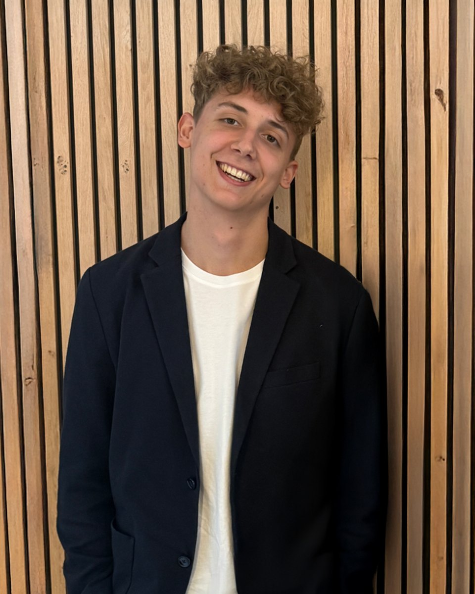

Je crée des identités, des contenus et des vidéos qui font de l'effet, pour le sport, les marques et les événements.
Community manager aux Levallois Metropolitans et studio freelance. Je pense l'idée, je la dessine, je la filme et je la publie.
Ce que j'ai fait, et ce que ça a donné.
Jour de match, en direct.
Les matchs que je filme en direct pour les Levallois Metropolitans. Touche un match pour voir les vidéos.

Derrière le studio.
Je suis community manager en alternance aux Levallois Metropolitans, en Élite 2. Visuels de match, stories, vidéos en direct du bord du terrain : je fais vivre le club sur les réseaux.
Avant, j'ai passé deux ans en agence événementielle chez YO Agency, entre salons, congrès et clients en Europe, en Asie et au Moyen-Orient. J'y ai appris à livrer vite et propre.
Mon truc : partir d'une idée simple et la pousser jusqu'au détail. Une identité, un post ou une vidéo, je veux que ça se voie et que ça serve.
Des missions freelance en identité visuelle, contenus sociaux et vidéo pour des clubs, des marques et des événements.
Parlons de ton projet.
Un logo, des visuels pour tes réseaux, une vidéo d'événement ? Dis-m'en un peu, je te réponds vite.
promis.